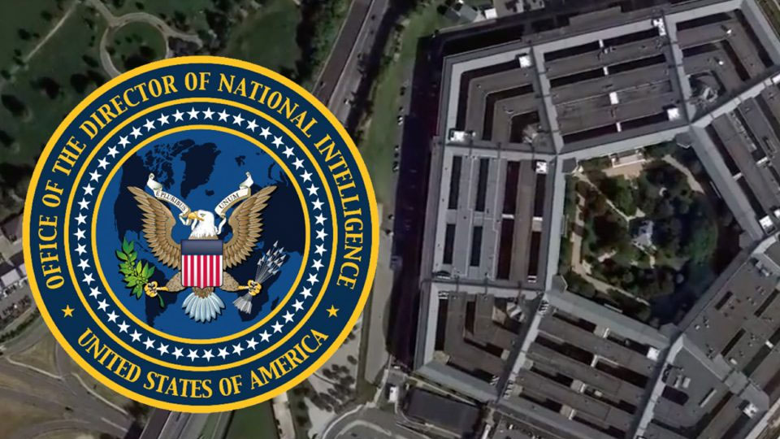
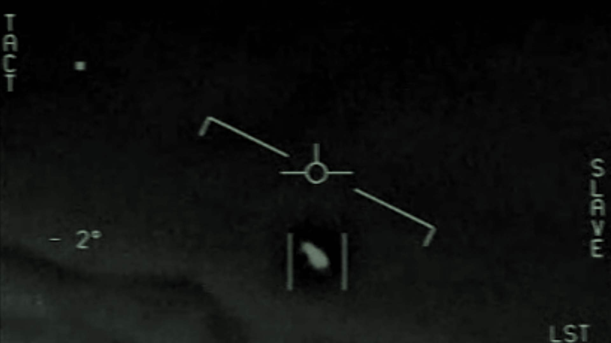

Unidentified bolts from the blue
Paul Fillingham, August 2021
The long-awaited research study by the US Office of Naval Intelligence into Unidentified Aerial Phenomenon (UAP) was made public on 25th June 2021. The Pentagon report is an indication that the security threat presented by UAP - more commonly known as UFOs - is being taken more seriously by the US Government.
First off, many people are confused by the new acronym UAP, but the distinction between UFO and UAP is really quite simple. An Unidentified Flying Object (UFO) refers to a solid, nuts-and-bolts physical object, like the silver flying saucers we've all seen in B-movies. Unidentified Aerial Phenomenon on the other hand encompasses more ethereal matter including smoke, cloud, and other intangible optical effects. Now we've cleared that up, let's move on.
In this new study, the UAP Task Force categorises incidents as follows:
- Airborne clutter
- Natural atmospheric effects
- Friendly technology
- Adversarial technology
- Unknown (other) phenomenon
Adversaries and unknowns are of greatest concern - particularly if they are of the solid variety (good old-fashioned UFOs).
Here's the numbers
Over a six-month period, there were eighty incidents where the presence of a physical object was verified by multiple aviation sensors, eighteen incidents where the object exhibited unusual flight characteristics, and eleven near misses with observer aircraft. With pilots travelling at supersonic speeds, a nuts-and-bolts collision with one of these objects would be fatal. These concerns extend beyond military operations, as commercial airlines are also aware of near misses.
Goodbye gravity
The term unusual flight characteristics is a bit of an understatement, since it describes speeds and manoeuvrability way beyond the capabilities of current fighter aircraft, materials, technology, and human endurance. The G-forces generated by some of the UFO manoeuvres would kill a pilot and tear our best aerial hardware apart - so could there be some anti-gravity control at work here?

Let's talk
Sociocultural stigmas associated with flying saucers and UFO phenomena mean that few pilots actually report incidents as they could compromise their professional standing. However, improved telematics and image capture do make incidents more difficult to dismiss. Several navy pilots who have talked openly about their experiences have done so from the safety of retirement. It is surprising that these eyewitnesses are not subject to gagging orders. The new disclosures beg the question - why now? What is the motivation for releasing this information at this point in time?
Video footage made by fighter pilots in 2004 has been in the public domain since 2017. This preliminary report by the US Office of Naval Intelligence adds no further detail about these close encounters. The Navy does admit to there being a lack of counterintelligence to suggest these incursions could be advanced technology under the control of a foreign power or commercial entity. Equally, there is no hint that these objects might be extraterrestrial. Previous testimonies have described objects emerging from under the sea, then accelerating to thousands of feet in the air. Whilst these claims seem plausible, there have been doubts about the reliability of onboard sensors, or the suggestion that pilots may have been fooled by visual parallax and the so-called bokeh lens effect. If you've ever pointed your mobile camera lens at a bright light, you will know the effect the report is referring to.
This report does confirm that incursions have been verified simultaneously by infra-red cameras, radio frequency, and radar. This data has also been recorded concurrently by air and marine craft. Then, of course, there are the eyewitness accounts from pilots who have attempted to lock onto the objects with weaponised camera technology and given chase. The implications of releasing a weapon even accidentally doesn't bear thinking about. The report does not reveal any more detail of specific cases as the US Navy pilots were engaged on live missions at the time, and detailing their exact whereabouts and other metadata would compromise national security.
Research, AI and strategic advantage
The report summary advises greater co-operation between US government departments and recommends further research funding, including the use of artificial intelligence (AI) to map aerial phenomenon more widely. It is interesting that this report on aerial phenomena has been published by the US Navy rather than the US Air Force, who remain tight-lipped about any UAP reports filed by their pilots.
We are curious about why the report is being released now and what kind of data trail it creates as it is consumed across the internet. Having downloaded the report, I have revealed my interest in the subject - but to whom? Has my data been harvested and aggregated with members of the conspiracy theorists QAnon? Am I now on a watch list? Are readers being softened up for a big reveal, or is this simply a huge departmental gaslighting deception to keep us off the scent of the real deal? This report raises more questions than it solves.
It seems likely that other nations are conducting their own research into UAP. Imagine the strategic advantage of acquiring hypersonic, anti-gravity technology. Earlier this year, a Freedom of Information (FOI) request concerning UFO reports was dismissed by UK Government, who chose to publish their response on the GOV.UK website on 1st April. It is not known whether this posting was intended as an April Fool's joke, or was a deliberate attempt to discredit a perfectly reasonable FOI request. The incumbent administration is no stranger to using humour and controversial quips to trivialise important issues, so I'll leave you to decide.
In truth, we still don't know very much about what is really out there.
